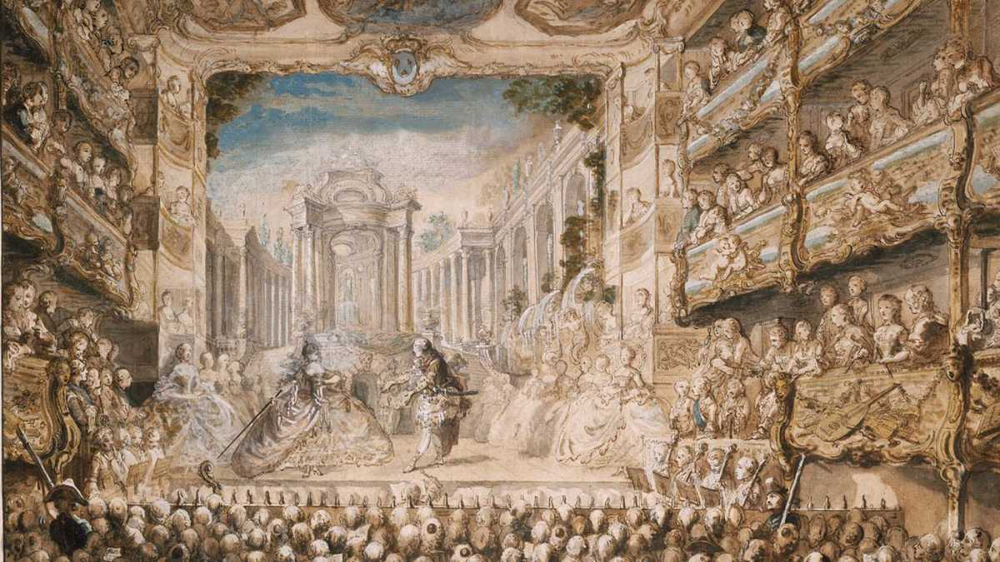

La profana crece, pero la religiosa se mantiene.
3. LA MÚSICA VOCAL
3.1. La ópera

Nace en Italia a comienzos del siglo XVII con compositores como Jacopo Peri y Claudio Monteverdi, autor de Orfeo (1607), considerada la primera gran ópera. La ópera combina música, teatro, poesía y danza; se organiza principalmente en arias, recitativos y coros.
- Arias: solo melódico y emocional para lucimiento vocal, con música elaborada y pausa en la acción.
- Recitativos: hablar cantando para avanzar la trama, con música simple y ritmo de habla.
- Coros: piezas para grupos que comentan la acción o representan a la multitud, añadiendo textura y profundidad dramática, a diferencia de los solos individuales
Como tres géneros principales tenemos:
- Ópera seria: temas mitológicos y heroicos. (Escuchamos: Julio César en Egipto de G. F. Händel | Aria: Se pietà di me non senti).
- Ópera bufa: argumentos cómicos y cotidianos. (Escuchamos: La serva padrona de Pergolesi | Aria de Serpina)
- En España surge la zarzuela, que alterna partes cantadas y habladas. (Escuchamos: Celos aun del aire matan; libreto de Pedro Calderón de la Barca y música de Juan Hidalgo de Polanco).
3.2. Música religiosa
Aunque la música profana gana terreno, la Iglesia sigue teniendo un papel importante. Destacamos tres tipos de piezas:
- Oratorio: parecido a la ópera, pero con tema religioso y sin puesta en escena (¡Aleluya!; El Mesías, de Händel; coro).
- Cantata: obra breve con texto religioso; destaca J.S. Bach (Jesús, alegría de los hombres de J.S. Bach).
- Pasión: relata la muerte de Cristo (Pasión según San Mateo, de J.S. Bach; Obertura).